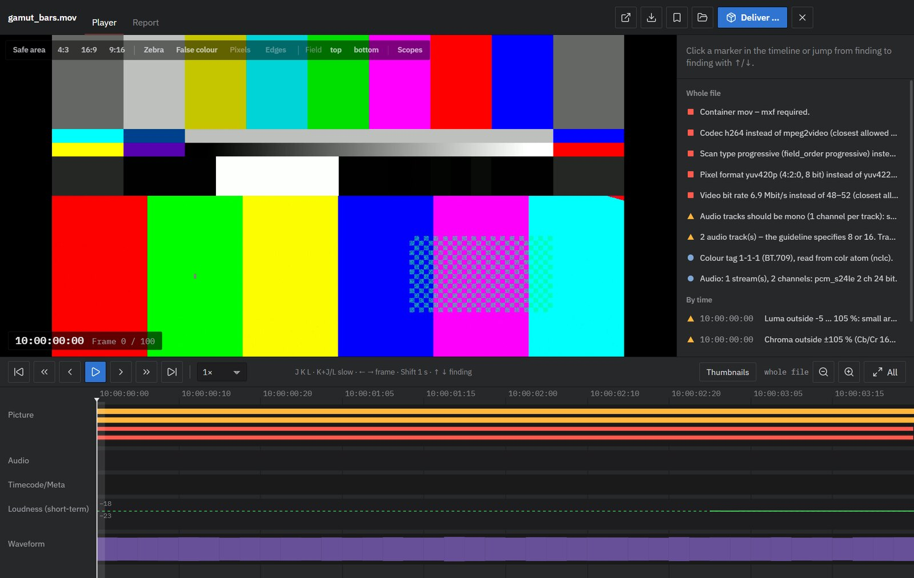
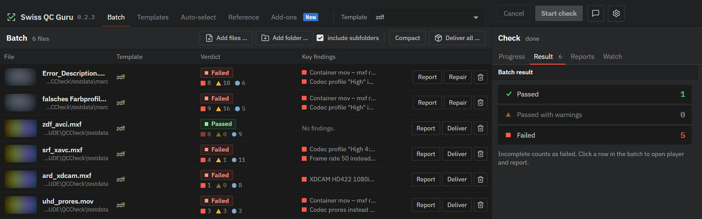

Install · version 0.2.3Installieren · Version 0.2.3
QC before delivery – in one windowQC vor der Abgabe – in einem Fenster
Swiss QC Guru checks transmission masters against the delivery specs of ARD, ZDF, ORF and SRF (TPR 2025, EBU R 103 / R 128): container, codec, start timecode, levels and gamut, loudness and True Peak, interlace, black and freeze frames, flashes, pixel faults. Every finding has a timecode, a frame and its source in the spec.Swiss QC Guru prüft Sendemaster gegen die Pflichtenhefte von ARD, ZDF, ORF und SRF (TPR 2025, EBU R 103 / R 128): Container, Codec, Start-Timecode, Pegel und Gamut, Lautheit und True Peak, Halbbilder, Schwarz- und Standbilder, Blitze, Pixelfehler. Jeder Befund hat Timecode, Bild und seine Quelle im Pflichtenheft.

Windows · macOS
InstallInstallieren
One line installs the app and the command line qccheck – no administrator rights. The package comes from GitHub and is only unpacked if its Ed25519 signature is valid.Eine Zeile installiert die App und die Kommandozeile qccheck – ohne Administratorrechte. Das Paket kommt von GitHub und wird nur entpackt, wenn seine Ed25519-Signatur stimmt.
- Open PowerShell: Start menu, type “PowerShell”, press Enter.PowerShell öffnen: Startmenü, „PowerShell“ tippen, Enter.
- Paste the line and press Enter. It takes about a minute.Zeile einfügen und Enter drücken. Das dauert etwa eine Minute.
- Start Swiss QC Guru from the desktop or the Start menu.Swiss QC Guru über Desktop oder Startmenü starten.
irm https://swissqcguru.com/install.ps1 | iex- Open Terminal: press ⌘ Space, type “Terminal”, press Return.Terminal öffnen: ⌘ Leertaste, „Terminal“ tippen, Return.
- Paste the line and press Return. It takes about a minute.Zeile einfügen und Return drücken. Das dauert etwa eine Minute.
- Start Swiss QC Guru from Applications in your home folder, or with Spotlight.Swiss QC Guru aus „Programme“ im Benutzerordner starten oder über Spotlight.
curl -fsSL https://swissqcguru.com/install.sh | bashApple Silicon and Intel – one package for both.Apple Silicon und Intel – ein Paket für beide.
The download is the free trial. Enter your licence key in the app under Settings › Licence – buy a licence.Der Download ist die kostenlose Demo. Den Lizenzschlüssel trägst du in der App unter Einstellungen › Lizenz ein – Lizenz kaufen.
Updates arrive by themselves: the app shows them at the top right and installs them after checking the signature again.Updates kommen von selbst: Die App zeigt sie oben rechts und installiert sie, nachdem sie die Signatur wieder geprüft hat.
Beta channel and uninstallingBeta-Kanal und Deinstallieren
Beta (pre-releases, may be unfinished):Beta (Vorabversionen, können unfertig sein):
irm https://swissqcguru.com/beta/install.ps1 | iexcurl -fsSL https://swissqcguru.com/beta/install.sh | bashThe normal line switches back to the stable channel. To uninstall, delete the Swiss QC Guru shortcuts and the folder %LOCALAPPDATA%\QCCheck (Mac: ~/Applications/QCCheck.app, ~/.local/bin/qccheck and ~/Library/Application Support/QCCheck).Die normale Zeile stellt zurück auf stabil. Entfernen: Verknüpfungen Swiss QC Guru löschen und den Ordner %LOCALAPPDATA%\QCCheck (Mac: ~/Applications/QCCheck.app, ~/.local/bin/qccheck und ~/Library/Application Support/QCCheck).
Release notesVersionshinweise
What's new in 0.2Neu in 0.2
- 0.2.3: country packs and new repairs – add-ons United Kingdom (AS-11 UK DPP), France, Nordics, Germany, Austria & Switzerland private and United States (captions, drop-frame), each with commercials (frame-accurate spot length, black frames, short-form loudness); repair now creates AVC-Intra 100, XAVC and H.264 deliveries and turns 50p into real 1080i25; loudness on UK and Nordic files is measured from programme start0.2.3: Länderpakete und neue Reparaturen – Zusätze Grossbritannien (AS-11 UK DPP), Frankreich, Nordische Länder, Deutschland, Österreich & Schweiz privat und USA (Untertitel, Drop-Frame), jeweils mit Werbung (Spotlänge framegenau, Schwarzbilder, Kurzform-Lautheit); die Reparatur erzeugt jetzt AVC-Intra 100, XAVC und H.264 und macht aus 50p echtes 1080i25; Lautheit bei UK- und nordischen Dateien ab Programmbeginn
- 0.2.2: Online & Podcast add-on (USD 49) – templates for YouTube, Spotify video, Apple Podcasts and Instagram / TikTok with checks for faststart, edit lists, variable frame rate, portrait format and keyframes; repair keeps AAC and moves the index to the front. Loudness repair of MP4 files fixed; only your own templates can be exported.0.2.2: Zusatz Online & Podcast (USD 49) – Vorlagen für YouTube, Spotify Video, Apple Podcasts und Instagram / TikTok mit Prüfungen für Faststart, Edit-Listen, variable Bildrate, Hochformat und Schlüsselbilder; die Reparatur behält AAC und setzt den Index nach vorne. Lautheitsreparatur von MP4-Dateien behoben; exportieren lassen sich nur noch eigene Vorlagen.
- 0.2.1: a better trial – it now checks the whole file and shows half of the findings, the most serious one always; the others are listed as locked. Optional anonymous usage count (asked once, off under Settings › Privacy).0.2.1: eine bessere Demo – sie prüft jetzt die ganze Datei und zeigt die Hälfte der Befunde, den schwersten immer; die übrigen stehen gesperrt in der Liste. Freiwillige anonyme Nutzungszählung (einmal gefragt, abschaltbar unter Einstellungen › Datenschutz).
- Swiss QC Guru – new name, new icon and a stricter, precise interface: every measurement in a fixed-width figure, colour only where it means something.Swiss QC Guru – neuer Name, neues Icon und eine strengere, genaue Oberfläche: jeder Messwert mit festen Ziffern, Farbe nur, wo sie etwas bedeutet.
- Free trial and licence – the trial checks the whole file and shows half of the findings – the most serious one always; the rest are listed as locked. A licence ($199 once) checks everything.Kostenlose Demo und Lizenz – die Demo prüft die ganze Datei und zeigt die Hälfte der Befunde – den schwersten immer; die übrigen stehen gesperrt in der Liste. Eine Lizenz ($199 einmalig) prüft alles.
- Add-ons – a new tab for extra broadcaster templates and looks. Included: the client view Rec.709 → desktop. More broadcasters are in preparation.Add-ons – ein neuer Reiter für weitere Senderprofile und Looks. Inklusive: die Kundenansicht Rec.709 → Bildschirm. Weitere Sender sind in Vorbereitung.
- Feedback from the app – report a bug or a wish with an optional screenshot and an anonymised log; nothing is sent without your click.Feedback aus der App – Fehler oder Wunsch melden, auf Wunsch mit Bildschirmfoto und anonymisiertem Protokoll; nichts geht ohne deinen Klick weg.
- Banding is now a note for ARD/ZDF/ORF and EBU R 103 instead of a warning – the broadcasters accept far more than the measurement flags.Banding ist bei ARD/ZDF/ORF und EBU R 103 jetzt ein Hinweis statt einer Warnung – die Sender nehmen deutlich mehr ab, als die Messung anzeigt.
- Also: safer handling of files and reports, installers in English and German, timeline labels easier to read.Ausserdem: sichererer Umgang mit Dateien und Berichten, Installer auf Englisch und Deutsch, besser lesbare Zeitleiste.

SystemSystem
RequirementsVoraussetzungen
- Windows 10 or 11 (64-bit), or macOS 12 or later on Apple Silicon or IntelWindows 10 oder 11 (64 bit) oder macOS 12 oder neuer auf Apple Silicon oder Intel
- About 500 MB disk space; more cores check faster (UHD ProRes: roughly half real time on 20 cores)Etwa 500 MB Platz; mehr Kerne prüfen schneller (UHD-ProRes: etwa halbe Echtzeit auf 20 Kernen)
- Internet for installing, updates and – only if you agree – an anonymous usage count; files are checked locally and never uploadedInternet für Installation, Updates und – nur wenn Sie zustimmen – eine anonyme Nutzungszählung; geprüft wird lokal, nichts wird hochgeladen
- Nothing else: Swiss QC Guru brings its own ffmpeg (GPL, source offer in the package)Sonst nichts: Swiss QC Guru bringt sein eigenes ffmpeg mit (GPL, Quellangebot im Paket)
Swiss QC Guru is a technical pre-check. It does not replace the broadcaster's acceptance, and the flash check is not a Harding test.Swiss QC Guru ist eine technische Vorprüfung. Sie ersetzt nicht die Abnahme des Senders, und die Blitz-Prüfung ist kein Harding-Test.